Live theatre
An evening inside someone else’s story.
07 / THINGS I LOVE
Art, architecture, mountain paths, a good book, a great debate. Outside work, I follow the things that make the world feel bigger.
THERE IS ALWAYS MORE TO DISCOVER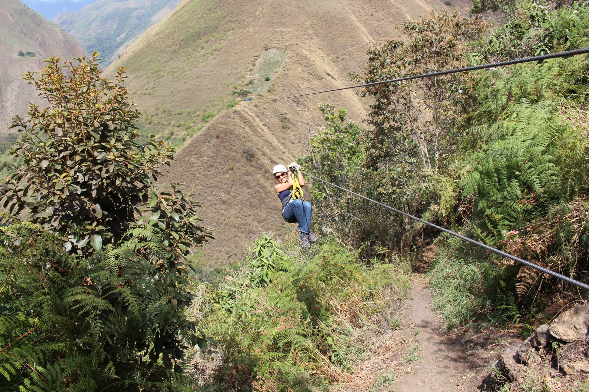
THE INTERESTING ROUTE
I love the perspective that comes from being somewhere unfamiliar. Hiking, cycling, and a willingness to take the interesting route keep me moving and open to discovery.
ARCHITECTURE & TRAVEL
Architecture is one of my favourite ways to read a place: what it values, what it remembers, and what it dares to imagine. These are photographs from my own travels.
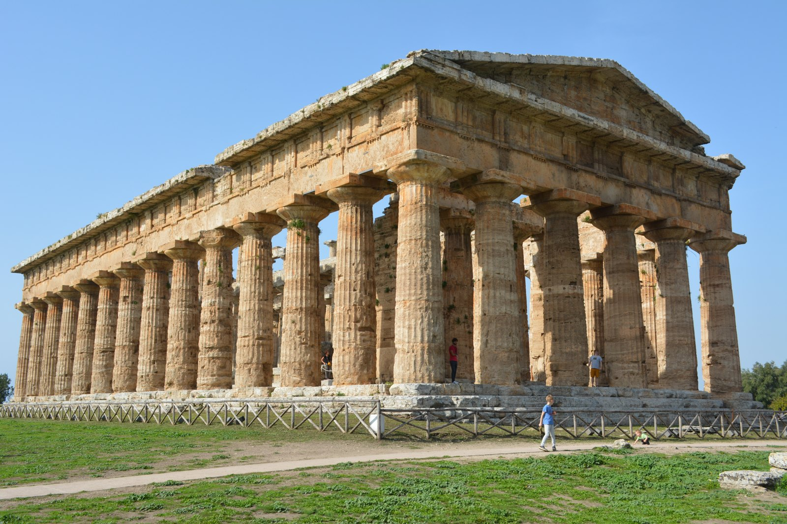
Classical architecture · Italy
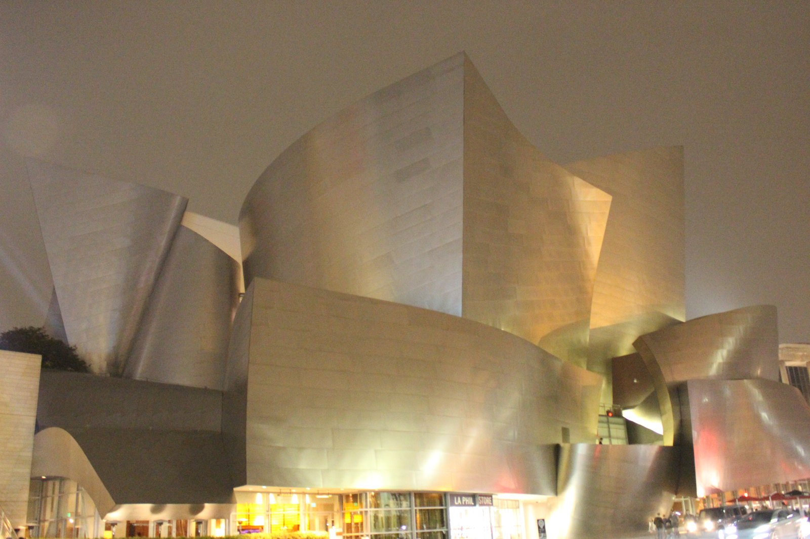
Walt Disney Concert Hall · United States
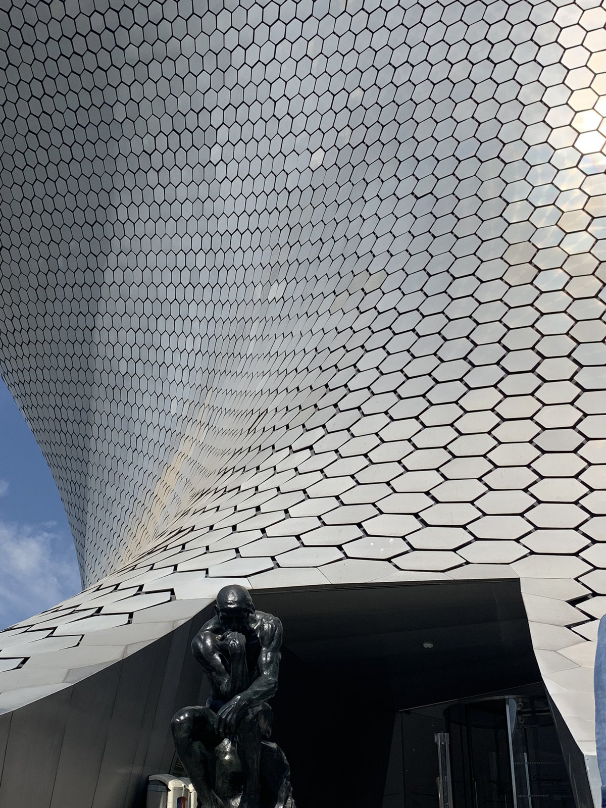
Museo Soumaya · Mexico
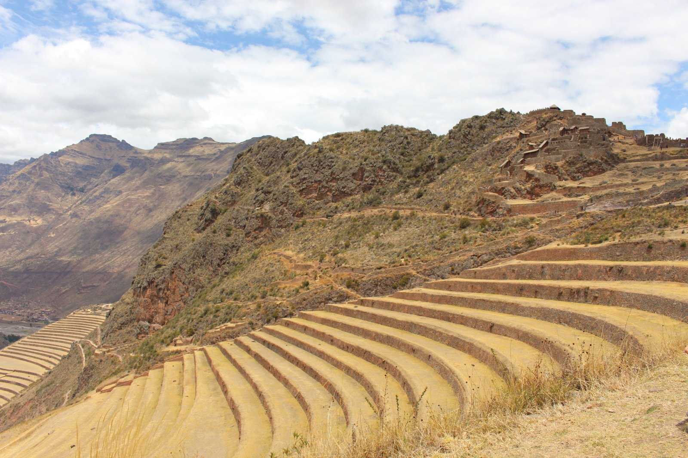
Terraced landscapes · Peru
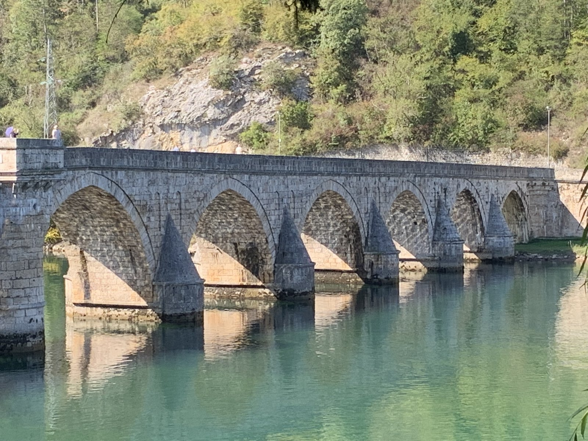
Mostar Bridge - Bosnia
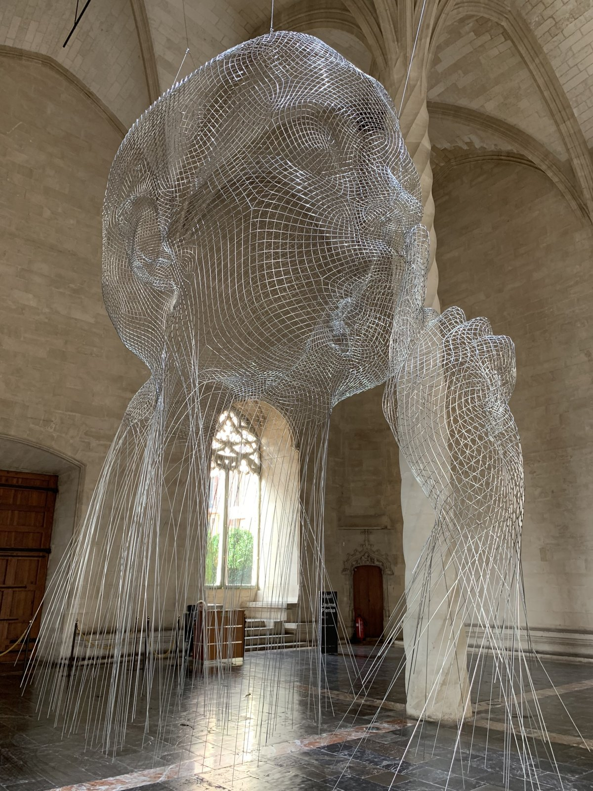
Statue in Cathedral - Mallorca
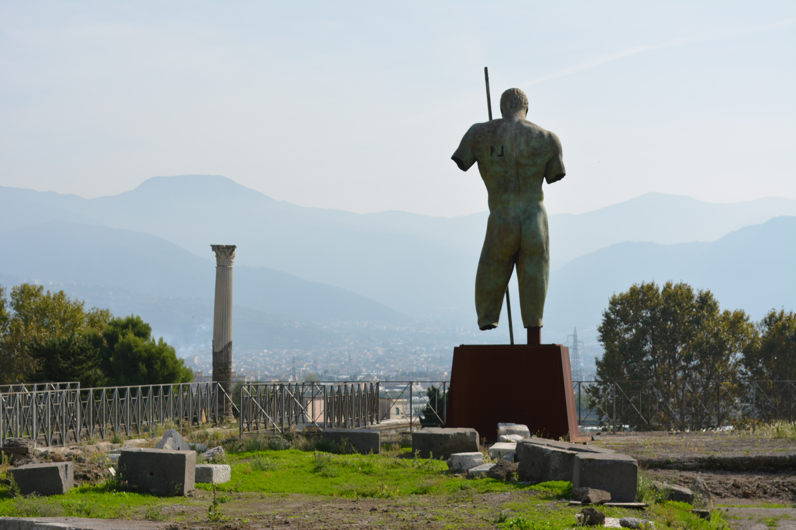
The ancient stories that live on
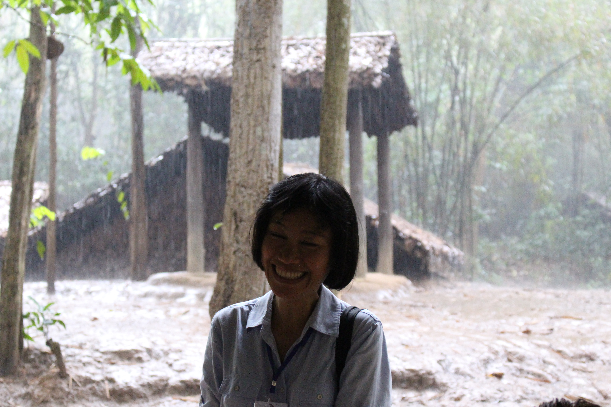
Vietnamiese tour guide
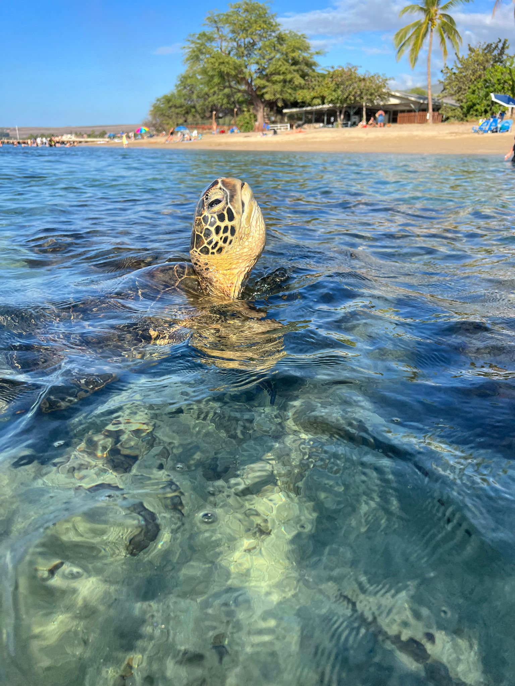
Swimming with Turtles in Hawaii
BOOKS & BIG IDEAS
Evolution, cognition, the history of ideas, and the people who changed them. I love writers who take something big and complex apart and make it understandable.
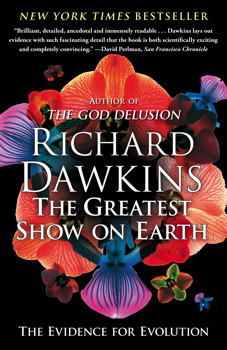
Richard Dawkins
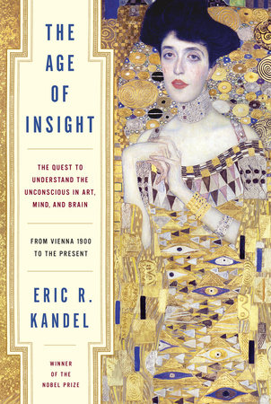
Eric R. Kandel
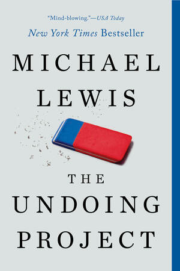
Michael Lewis

Yuval Noah Harari
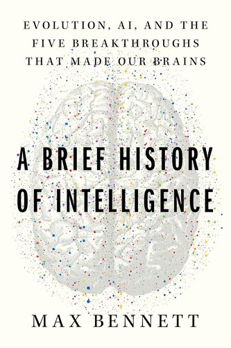
Max Bennett
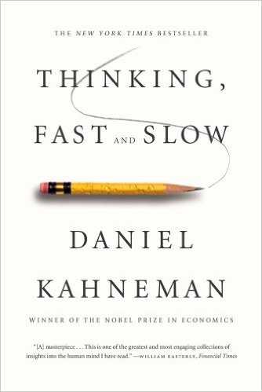
Daniel Kahneman
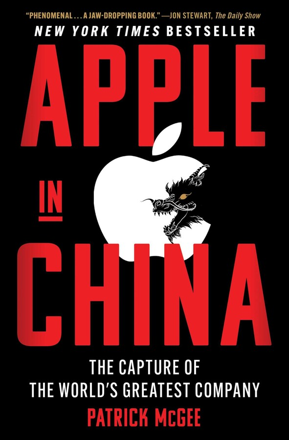
Patrick McGee
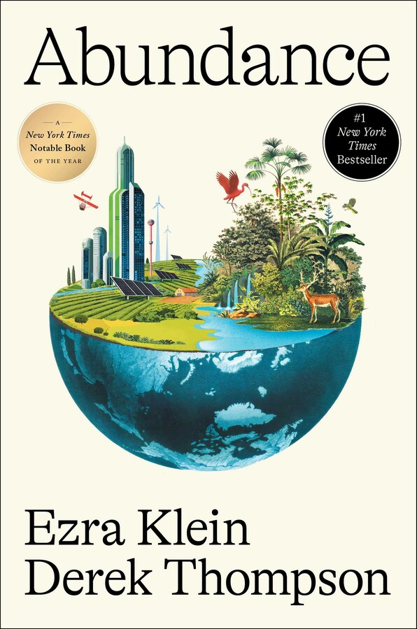
Ezra Klein and Derek Thompson
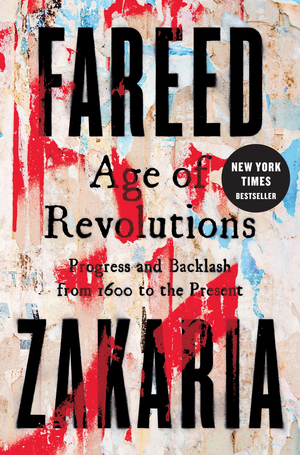
Fareed Zakaria
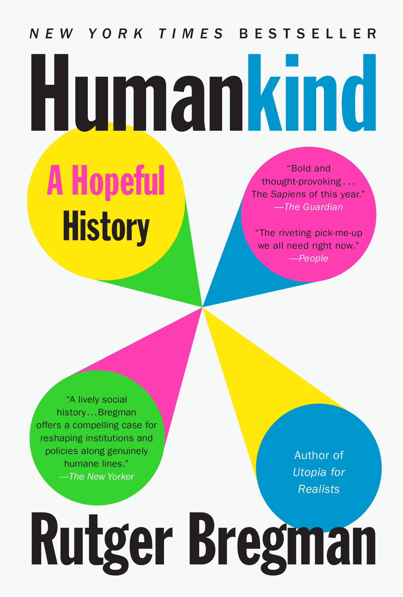
Rutger Bregman
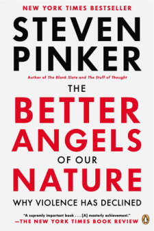
Steven Pinker
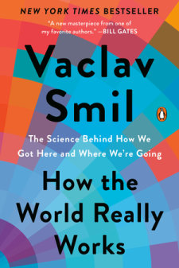
Vaclav Smil
PODCASTS & CONVERSATIONS
Conversations that keep me thinking about technology, science, politics, and human behaviour.
An evening inside someone else’s story.
A thoughtful argument and a different point of view.
Fresh air, a new trail, and a change of perspective.
Especially with good company and an unhurried conversation.